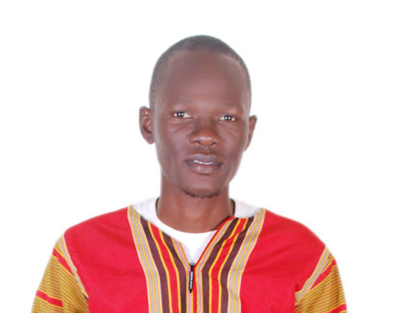

Team
Syrill Kizza: Executive director and founder

My name is Syrill Kizza, a Social Entrepreneur, Motivational speaker and a child rights advocate. I am a born of December 17th 1989 in Kampala (Uganda). I was born and raised in a slum area as an Orphan, Having lost my mother at a tender age of 5 years, Life became so difficult for me and my siblings, I being the last born of the 4 children my mum had given birth too, I went through a lot of oppression, I was subjected to child labor in order to put food and scholastic materials on my table, so having struggled with having basic needs and a good Education, this exposed me to a lot of challenges in life which included child rights abuse, but with hard work and determination, I overcame the oppression and this arouse my passion to help children in need succeed in life and become responsible leaders of tomorrow.
Brenda Econia: General Secretary

My name is Brenda Econia, I am a born of 1st-December-1995. I am an Orphan, my father was a police officer doing service to our country, I grew up living in the Police barracks which was more of a slum setting, since houses where packed with poor drainage systems. My Father died in line of duty in a motor accident caused by early mist and fog, He could no longer clearly see images that were in front, sideways and backwards, Him being the one driving during the incident, This left me and my siblings as partial Orphans, Our father was the bread winner of our family, and ever since he passed away, my mother could not take good care of us since she had a lot of responsibilities to take care of we the 5 children who happen to be my biological siblings. My Education and life was full of struggles trying to make ends meet but by the grace of God, I was able to attain basic formal education.
Abraham Olupot: Programs Director

My name is Abraham Olupot a born of 1st-January-1989 and raised in Kampala Slums. Charity to me is honoring God’s calling upon my life and as a way to walk and follow the footsteps of our Lord and Savior Jesus Christ, who clearly said to us that the greatest commandments are to Love God with all your heart ,body, spirit and soul plus all your belongings and Love your neighbor as you love yourself. Jesus Christ displayed the love of the poor by attending to them whenever they came to seek for any assistance from him, He displayed this character by doing servant leadership for example when He washed the feet of His disciples, He eat with the poor, the less privileged, and He once said He did not come for the upright but for those in need. God still encourages the spirit of giving to Humanity by giving to us his only Beloved Son Jesus Christ who died for our sins and brought salvation unto us, so in giving you save a soul from perishing and extend the love of God on Earth since you will be a vessel God will be using to reach out to his people, and giving is a double edged sword, where the receiver attains the basic needs and this build the kingdom of God on Earth and the poor will be praising His Holy name Jesus Christ for Remembering them, and to the giver it is an eternity saving and God rewards you with blessings both in Heaven and on Earth. “He who closes his eyes to [the poor] receives many curses.” (Proverbs 28:27)
Kisinde Rogers Arthur: Director of Education

My name is Kisinde Rogers Arthur, I am a born of February-14th-1988 in Kampala, Uganda, my passion of helping the orphans and vulnerable children grew as a result of in-depth kindness as I grew up watching the life of the marginalized children in my neighborhood, Accessing Education, having basic needs was unheard of in the slum communities they were living in, as a child I become friends with the deprived children, so whenever I got something small like bread, sweets, food, I would always put them aside in my small bag and share them with my friends who could not afford to have them though they were in need of them, we shared game toys, and I used to even give them some of my personal clothes that I no longer needed, and these my poor friends showered my life with thanks and blessings for God to make me live for long and to give me all what my heart desired, so this made me realize that "Every contribution counts in the lives of the less fortunate" and when time went on, this become an adopted culture in me of giving and not only that, whenever I could lend a helping hand, God continually blessed me and doubled my portion, This made me to realize the secret in giving, I relate this to a bible scripture that says Blessed is that hand that gives, than the hand that takes and our Lord Jesus Christ said "It is more blessed to give than to receive."
Lukanga Musoke Godfrey: Treasurer
My name is Lukanga Musoke Godfrey, born on 22nd-June-1990 in Kampala slums, my life was full of challenges, hardships, discomfort and a series of disappointment, living in the ghetto taught me many lessons in life, that being poor in life confronts you with all sorts of diminishing behaviors like drug abuse, prostitution and the list is endless, This abject poverty champions the choices in your life, since your voice is always inferior in the community. Children are confronted with a lot of challenges which a few can overcome and the rest fail and end up becoming un-fit in society.